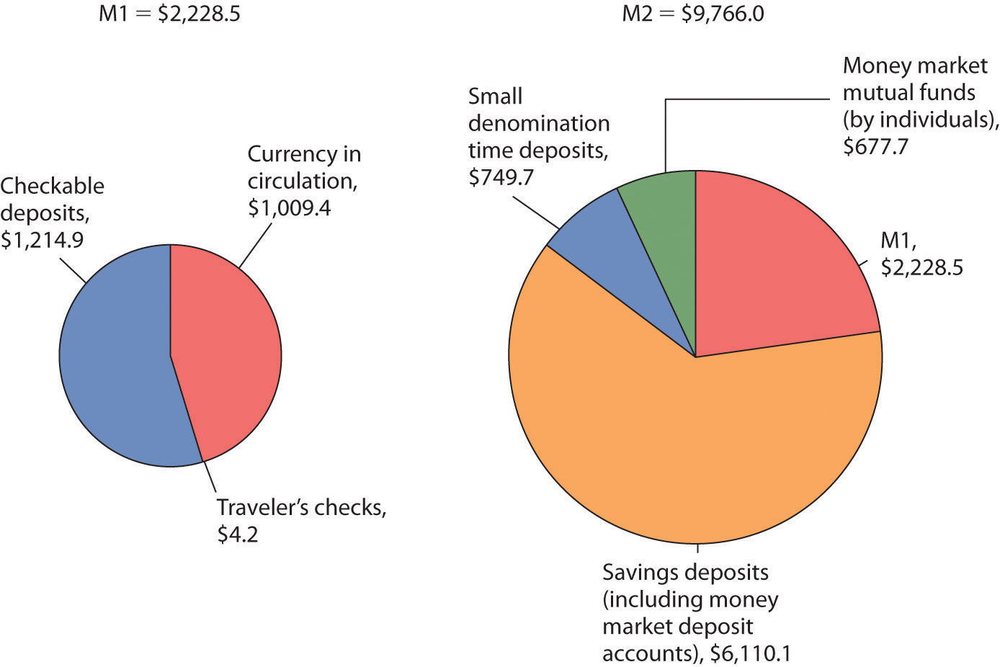

If cigarettes and mackerel can be used as money, then just what is money? MoneyAnything that serves as a medium of exchange. is anything that serves as a medium of exchange. A medium of exchangeAnything that is widely accepted as a means of payment. is anything that is widely accepted as a means of payment. In Romania under Communist Party rule in the 1980s, for example, Kent cigarettes served as a medium of exchange; the fact that they could be exchanged for other goods and services made them money.
Money, ultimately, is defined by people and what they do. When people use something as a medium of exchange, it becomes money. If people were to begin accepting basketballs as payment for most goods and services, basketballs would be money. We will learn in this chapter that changes in the way people use money have created new types of money and changed the way money is measured in recent decades.
Money serves three basic functions. By definition, it is a medium of exchange. It also serves as a unit of account and as a store of value—as the “mack” did in Lompoc.
The exchange of goods and services in markets is among the most universal activities of human life. To facilitate these exchanges, people settle on something that will serve as a medium of exchange—they select something to be money.
We can understand the significance of a medium of exchange by considering its absence. BarterWhen goods are exchanged directly for other goods. occurs when goods are exchanged directly for other goods. Because no one item serves as a medium of exchange in a barter economy, potential buyers must find things that individual sellers will accept. A buyer might find a seller who will trade a pair of shoes for two chickens. Another seller might be willing to provide a haircut in exchange for a garden hose. Suppose you were visiting a grocery store in a barter economy. You would need to load up a truckful of items the grocer might accept in exchange for groceries. That would be an uncertain affair; you could not know when you headed for the store which items the grocer might agree to trade. Indeed, the complexity—and cost—of a visit to a grocery store in a barter economy would be so great that there probably would not be any grocery stores! A moment’s contemplation of the difficulty of life in a barter economy will demonstrate why human societies invariably select something—sometimes more than one thing—to serve as a medium of exchange, just as prisoners in federal penitentiaries accepted mackerel.
Ask someone in the United States what he or she paid for something, and that person will respond by quoting a price stated in dollars: “I paid $75 for this radio,” or “I paid $15 for this pizza.” People do not say, “I paid five pizzas for this radio.” That statement might, of course, be literally true in the sense of the opportunity cost of the transaction, but we do not report prices that way for two reasons. One is that people do not arrive at places like Radio Shack with five pizzas and expect to purchase a radio. The other is that the information would not be very useful. Other people may not think of values in pizza terms, so they might not know what we meant. Instead, we report the value of things in terms of money.
Money serves as a unit of accountA consistent means of measuring the value of things., which is a consistent means of measuring the value of things. We use money in this fashion because it is also a medium of exchange. When we report the value of a good or service in units of money, we are reporting what another person is likely to have to pay to obtain that good or service.
The third function of money is to serve as a store of valueAn item that holds value over time., that is, an item that holds value over time. Consider a $20 bill that you accidentally left in a coat pocket a year ago. When you find it, you will be pleased. That is because you know the bill still has value. Value has, in effect, been “stored” in that little piece of paper.
Money, of course, is not the only thing that stores value. Houses, office buildings, land, works of art, and many other commodities serve as a means of storing wealth and value. Money differs from these other stores of value by being readily exchangeable for other commodities. Its role as a medium of exchange makes it a convenient store of value.
Because money acts as a store of value, it can be used as a standard for future payments. When you borrow money, for example, you typically sign a contract pledging to make a series of future payments to settle the debt. These payments will be made using money, because money acts as a store of value.
Money is not a risk-free store of value, however. We saw in the chapter that introduced the concept of inflation that inflation reduces the value of money. In periods of rapid inflation, people may not want to rely on money as a store of value, and they may turn to commodities such as land or gold instead.
Although money can take an extraordinary variety of forms, there are really only two types of money: money that has intrinsic value and money that does not have intrinsic value.
Commodity moneyMoney that has value apart from its use as money. is money that has value apart from its use as money. Mackerel in federal prisons is an example of commodity money. Mackerel could be used to buy services from other prisoners; they could also be eaten.
Gold and silver are the most widely used forms of commodity money. Gold and silver can be used as jewelry and for some industrial and medicinal purposes, so they have value apart from their use as money. The first known use of gold and silver coins was in the Greek city-state of Lydia in the beginning of the seventh century B.C. The coins were fashioned from electrum, a natural mixture of gold and silver.
One disadvantage of commodity money is that its quantity can fluctuate erratically. Gold, for example, was one form of money in the United States in the 19th century. Gold discoveries in California and later in Alaska sent the quantity of money soaring. Some of this nation’s worst bouts of inflation were set off by increases in the quantity of gold in circulation during the 19th century. A much greater problem exists with commodity money that can be produced. In the southern part of colonial America, for example, tobacco served as money. There was a continuing problem of farmers increasing the quantity of money by growing more tobacco. The problem was sufficiently serious that vigilante squads were organized. They roamed the countryside burning tobacco fields in an effort to keep the quantity of tobacco, hence money, under control. (Remarkably, these squads sought to control the money supply by burning tobacco grown by other farmers.)
Another problem is that commodity money may vary in quality. Given that variability, there is a tendency for lower-quality commodities to drive higher-quality commodities out of circulation. Horses, for example, served as money in colonial New England. It was common for loan obligations to be stated in terms of a quantity of horses to be paid back. Given such obligations, there was a tendency to use lower-quality horses to pay back debts; higher-quality horses were kept out of circulation for other uses. Laws were passed forbidding the use of lame horses in the payment of debts. This is an example of Gresham’s law: the tendency for a lower-quality commodity (bad money) to drive a higher-quality commodity (good money) out of circulation. Unless a means can be found to control the quality of commodity money, the tendency for that quality to decline can threaten its acceptability as a medium of exchange.
But something need not have intrinsic value to serve as money. Fiat moneyMoney that some authority, generally a government, has ordered to be accepted as a medium of exchange. is money that some authority, generally a government, has ordered to be accepted as a medium of exchange. The currencyPaper money and coins.—paper money and coins—used in the United States today is fiat money; it has no value other than its use as money. You will notice that statement printed on each bill: “This note is legal tender for all debts, public and private.”
Checkable depositsBalances in checking accounts., which are balances in checking accounts, and traveler’s checks are other forms of money that have no intrinsic value. They can be converted to currency, but generally they are not; they simply serve as a medium of exchange. If you want to buy something, you can often pay with a check or a debit card. A checkA written order to a bank to transfer ownership of a checkable deposit. is a written order to a bank to transfer ownership of a checkable deposit. A debit card is the electronic equivalent of a check. Suppose, for example, that you have $100 in your checking account and you write a check to your campus bookstore for $30 or instruct the clerk to swipe your debit card and “charge” it $30. In either case, $30 will be transferred from your checking account to the bookstore’s checking account. Notice that it is the checkable deposit, not the check or debit card, that is money. The check or debit card just tells a bank to transfer money, in this case checkable deposits, from one account to another.
What makes something money is really found in its acceptability, not in whether or not it has intrinsic value or whether or not a government has declared it as such. For example, fiat money tends to be accepted so long as too much of it is not printed too quickly. When that happens, as it did in Russia in the 1990s, people tend to look for other items to serve as money. In the case of Russia, the U.S. dollar became a popular form of money, even though the Russian government still declared the ruble to be its fiat money.
The term money, as used by economists and throughout this book, has the very specific definition given in the text. People can hold assets in a variety of forms, from works of art to stock certificates to currency or checking account balances. Even though individuals may be very wealthy, only when they are holding their assets in a form that serves as a medium of exchange do they, according to the precise meaning of the term, have “money.” To qualify as “money,” something must be widely accepted as a medium of exchange.
The total quantity of money in the economy at any one time is called the money supplyThe total quantity of money in the economy at any one time.. Economists measure the money supply because it affects economic activity. What should be included in the money supply? We want to include as part of the money supply those things that serve as media of exchange. However, the items that provide this function have varied over time.
Before 1980, the basic money supply was measured as the sum of currency in circulation, traveler’s checks, and checkable deposits. Currency serves the medium-of-exchange function very nicely but denies people any interest earnings. (Checking accounts did not earn interest before 1980.)
Over the last few decades, especially as a result of high interest rates and high inflation in the late 1970s, people sought and found ways of holding their financial assets in ways that earn interest and that can easily be converted to money. For example, it is now possible to transfer money from your savings account to your checking account using an automated teller machine (ATM), and then to withdraw cash from your checking account. Thus, many types of savings accounts are easily converted into currency.
Economists refer to the ease with which an asset can be converted into currency as the asset’s liquidityThe ease with which an asset can be converted into currency.. Currency itself is perfectly liquid; you can always change two $5 bills for a $10 bill. Checkable deposits are almost perfectly liquid; you can easily cash a check or visit an ATM. An office building, however, is highly illiquid. It can be converted to money only by selling it, a time-consuming and costly process.
As financial assets other than checkable deposits have become more liquid, economists have had to develop broader measures of money that would correspond to economic activity. In the United States, the final arbiter of what is and what is not measured as money is the Federal Reserve System. Because it is difficult to determine what (and what not) to measure as money, the Fed reports several different measures of money, including M1 and M2.
M1The narrowest of the Fed’s money supply definitions that includes currency in circulation, checkable deposits, and traveler’s checks. is the narrowest of the Fed’s money supply definitions. It includes currency in circulation, checkable deposits, and traveler’s checks. M2A broader measure of the money supply than M1 that includes M1 and other deposits. is a broader measure of the money supply than M1. It includes M1 and other deposits such as small savings accounts (less than $100,000), as well as accounts such as money market mutual funds (MMMFs) that place limits on the number or the amounts of the checks that can be written in a certain period.
M2 is sometimes called the broadly defined money supply, while M1 is the narrowly defined money supply. The assets in M1 may be regarded as perfectly liquid; the assets in M2 are highly liquid, but somewhat less liquid than the assets in M1. Even broader measures of the money supply include large time-deposits, money market mutual funds held by institutions, and other assets that are somewhat less liquid than those in M2. Figure 24.1 "The Two Ms: January 2012" shows the composition of M1 and M2 in October 2010.
Figure 24.1 The Two Ms: January 2012
M1, the narrowest definition of the money supply, includes assets that are perfectly liquid. M2 provides a broader measure of the money supply and includes somewhat less liquid assets. Amounts represent money supply data in billions of dollars for January 2012, seasonally adjusted.
Source: Federal Reserve Statistical Release H.6, Tables 3 and 4 (February 16, 2012). Amounts are in billions of dollars for January 2012, seasonally adjusted.
Credit cards are not money. A credit card identifies you as a person who has a special arrangement with the card issuer in which the issuer will lend you money and transfer the proceeds to another party whenever you want. Thus, if you present a MasterCard to a jeweler as payment for a $500 ring, the firm that issued you the card will lend you the $500 and send that money, less a service charge, to the jeweler. You, of course, will be required to repay the loan later. But a card that says you have such a relationship is not money, just as your debit card is not money.
With all the operational definitions of money available, which one should we use? Economists generally answer that question by asking another: Which measure of money is most closely related to real GDP and the price level? As that changes, so must the definition of money.
In 1980, the Fed decided that changes in the ways people were managing their money made M1 useless for policy choices. Indeed, the Fed now pays little attention to M2 either. It has largely given up tracking a particular measure of the money supply. The choice of what to measure as money remains the subject of continuing research and considerable debate.
Which of the following are money in the United States today and which are not? Explain your reasoning in terms of the functions of money.
“We don’t have a currency of our own,” proclaimed Nerchivan Barzani, the Kurdish regional government’s prime minister in a news interview in 2003. But, even without official recognition by the government, the so-called “Swiss” dinar certainly seemed to function as a fiat money. Here is how the Kurdish area of northern Iraq, during the period between the Gulf War in 1991 and the fall of Saddam Hussein in 2003, came to have its own currency, despite the pronouncement of its prime minister to the contrary.
After the Gulf War, the northern, mostly Kurdish area of Iraq was separated from the rest of Iraq though the enforcement of the no-fly-zone. Because of United Nations sanctions that barred the Saddam Hussein regime in the south from continuing to import currency from Switzerland, the central bank of Iraq announced it would replace the “Swiss” dinars, so named because they had been printed in Switzerland, with locally printed currency, which became known as “Saddam” dinars. Iraqi citizens in southern Iraq were given three weeks to exchange their old dinars for the new ones. In the northern part of Iraq, citizens could not exchange their notes and so they simply continued to use the old ones.
And so it was that the “Swiss” dinar for a period of about 10 years, even without government backing or any law establishing it as legal tender, served as northern Iraq’s fiat money. Economists use the word “fiat,” which in Latin means “let it be done,” to describe money that has no intrinsic value. Such forms of money usually get their value because a government or authority has declared them to be legal tender, but, as this story shows, it does not really require much “fiat” for a convenient, in-and-of-itself worthless, medium of exchange to evolve.
What happened to both the “Swiss” and “Saddam” dinars? After the Coalition Provisional Authority (CPA) assumed control of all of Iraq, Paul Bremer, then head of the CPA, announced that a new Iraqi dinar would be exchanged for both of the existing currencies over a three-month period ending in January 2004 at a rate that implied that one “Swiss” dinar was valued at 150 “Saddam” dinars. Because Saddam Hussein’s regime had printed many more “Saddam” dinars over the 10-year period, while no “Swiss” dinars had been printed, and because the cheap printing of the “Saddam” dinars made them easy to counterfeit, over the decade the “Swiss” dinars became relatively more valuable and the exchange rate that Bremer offered about equalized the purchasing power of the two currencies. For example, it took about 133 times as many “Saddam” dinars as “Swiss” dinars to buy a man’s suit in Iraq at the time. The new notes, sometimes called “Bremer” dinars, were printed in Britain and elsewhere and flown into Iraq on 22 flights using Boeing 747s and other large aircraft. In both the northern and southern parts of Iraq, citizens turned in their old dinars for the new ones, suggesting at least more confidence at that moment in the “Bremer” dinar than in either the “Saddam” or “Swiss” dinars.
Sources: Mervyn A. King, “The Institutions of Monetary Policy” (lecture, American Economics Association Annual Meeting, San Diego, January 4, 2004), available at http://www.bankofengland.co.uk/publications/Documents/speeches/2004/speech208.pdf; Hal R. Varian, “Paper Currency Can Have Value without Government Backing, but Such Backing Adds Substantially to Its Value,” New York Times, January 15, 2004, p. C2.